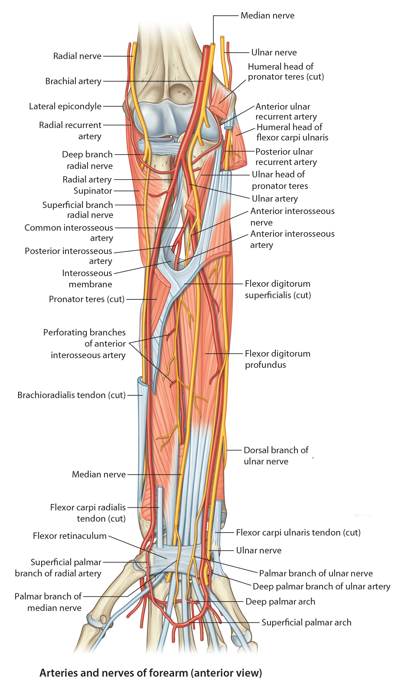
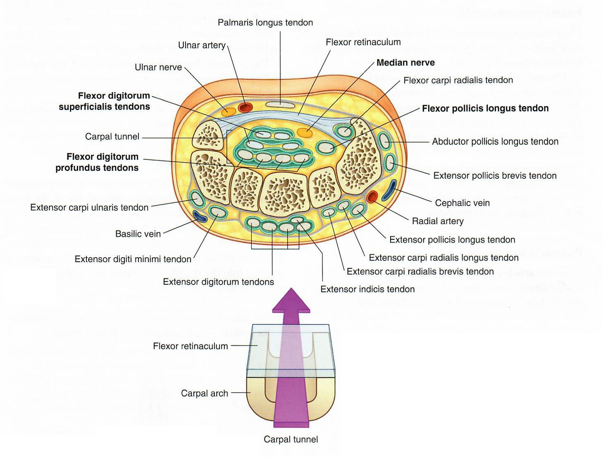

Lab3 - Module 2 - Anatomy of the Arm and Forearm: Page 8 of 11
Anterior Nerves of the Forearm
|  |
| Tap on image to enlarge |
| The nerves of the forearm are the median, ulnar, and radial. Although the radial nerve appears in the cubital region, it soon enters the posterior fascial compartment. Aside from the cutaneous branches, the only nerves of the anterior forearm are the median and ulnar |
|
The Articular branches to the elbow joint. The Muscular branches to pronator teres, flexor carpi radialis, palmaris longus, flexor digitorum superficialis. The Anterior Interosseous Branch arises in the distal part of the cubital fossa; passes inferiorly on the interosseous membrane with the anterior interosseous branch of the ulnar artery. The anterior interosseous nerve runs between the flexor digitorum profundus and the flexor pollicis longus to reach the pronator quadratus, supplying flexor pollicis longus, pronator quadratus, and the lateral half of the flexor digitorum profundus muscle. It passes deep to the pronator quadratus and ends by supplying the wrist joint. The Palmar Cutaneous Branch arises just proximal to the flexor retinaculum and becomes cutaneous between the tendons of the palmaris longus and the flexor carpi radialis muscle; supplies the skin of the lateral palm. |
| Any lesion that significantly reduces the size of the carpal tunnel may cause compression of the median nerve indicated by paresthesia (tingling), anesthesia (loss of tactile sensation), or hypoesthesia (diminished sensation). In cases of severe compression of the median nerve, there may be atrophy of the thenar muscles. To relieve symptoms of the carpal tunnel syndrome, transection of the flexor retinaculum (transverse carpal ligament) may be necessary. | 
What is the clinical significance of the origin of the Palmar Cutaneous Branch of the Median nerve? |
|
|
Because this branch arises proximal to the median nerve entering the carpal tunnel there are no sensory deficits to the lateral palm in carpal tunnel syndrome. 
|
|